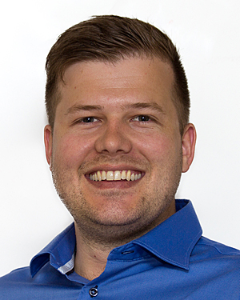
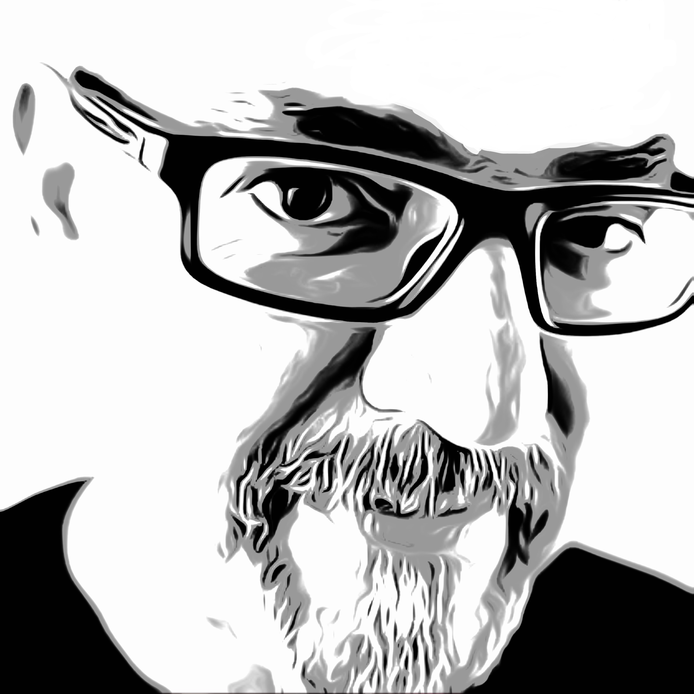
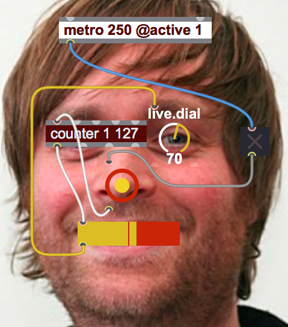

Foredrag
Fuse - Real deal?
Hva skjer om du tar et par backend-utviklere og gir dem frie tøyler med et ferskt kryss-plattform mobilutviklingsrammeverk?
Siden påske har vi brukt fagtimene til å finne ut svaret på akkurat det, ved å prøve å lage en app i Fuse!
Vi ser kjapt på om Fuse er egnet og modent nok til kommersielt bruk, og viser fram tidenes app!

Håkon Gulbrandsen & Joakim Lehn
Hva skjer om du tar et par backend-utviklere og gir dem frie tøyler med et ferskt kryss-plattform mobilutviklingsrammeverk?<br/>Siden påske har vi brukt fagtimene til å finne ut svaret på akkurat det, ved å prøve å lage en app i Fuse!<br/>Vi ser kjapt på om Fuse er egnet og modent nok til kommersielt bruk, og viser fram tidenes app!
Final? Gi meg const!
Som tidligere C++-utvikler var jeg fornøyd da jeg så at Java hadde et final-keyword. Gleden var dog kortvarig da jeg fant ut hvor liten effekt final faktisk har når man jobber i en stor og gammel kodebase. C og C++ er kanskje kjent for segfaults, minnelekasjer og udefinert oppførsel, men noe har de gjort rett. I denne talken introduserer jeg C++ sitt keyword const, hvilket problem dette løser og hvorfor Java burde ha noe tilsvarende.

Ole Bakstad
Ole er en faglig engasjert utvikler som interesserer seg for alt fra programmering til utviklingsprosesser og organisasjonskultur. Spesielt interessert i hvordan tekniske valg påvirker måten man jobber på, jobbhverdagen til de ansatte og evnen til å skape verdi over tid. Aktiv medlem av JavaBin og JavaZone sin programkomité.
Hvordan programmere Microsoft HoloLens
Hvorfor er HoloLens forskjellig fra andre Virtual Reality briller, og hvordan programmerer man for den. API støtte for world coordinates, gestures, gaze, voice, spatial sound og spatial mapping. Ja, jeg tar med en HoloLens.

Christian Egeberg
Christian er en .Net utvikler med fokus på skyarkitektur og mobil. Han har dyp interesse for alle slags dingser og teknologi, liker å gjøre ting grundig, og tenker ofte utenfor bokser. Christian kan til tider sette umåtelig pris på bevisst å befinne seg på feil jorde.
Fagstrategi
Hva er Knowit Objectnets fagstrategi? I denne halvtimen presenteres vårt "Center Of Excellence systemutvikling", neste års fagplan og hvilke faglige satsningsområder vi har fremover.

Jan Henrik Gundelsby
Jan Henrik er fagsjef i Knowit Objectnet. Han har 20 års erfaring med teknologi på JVMen. Har de siste årene syslet mye med applikasjonsdrift, mikrotjenester og DevOps sentralt i Oslo kommune. En ivrig lettvekts-fantast som forsøker å jobbe mot smidige arkitekturer og løsninger.

Haakon Spilde
Haakon er fagsjef i Knowit Objectnet. Haakon er lidenskapelig opptatt av prosess og metode, med særlig fokus på Agile teknikker. Hvordan lære av sine feil, hvordan endre sine metoder og prosesser til det bedre og hvordan få et team til å fungere optimalt er tema som opptar Haakon.
Hippieprogrammering i Max
Max er et programmeringsspråk som lar deg kombinere media og hardware på kreative måter. Språket ble laget på midten av åttitallet, men er fortsatt poplært. Det er et visuelt programmeringsspråk. Til tross for dette, er språket givende å programmere i og har et godt utviklingsmiljø.
Språket finnes i en open source variant som heter Pure Data.
Dette foredraget vil gi en kort innføring i språket og demoer for å vise mulighetene. Hensikten er å gi en overordnet forståelse av språket og mulige anvendelsesområder.
Foredraget egner seg både for de som kan programmere og ikke-programmere. Språket er veldig annerledes andres språk, så en begrenset “teknisk balast” kan tilogmed være en fordel.

Andreas Bade
Andreas har jobbet så lenge i Knowit at han har e-postadresse på to bokstaver. Han har programmert profesjonelt over i ti år, i hovedsak i Java, men også i .net. Han jobber nå som prosjektleder og teamleder, men er fortsatt glad i fikle med ting som er morsomme å fikle med.